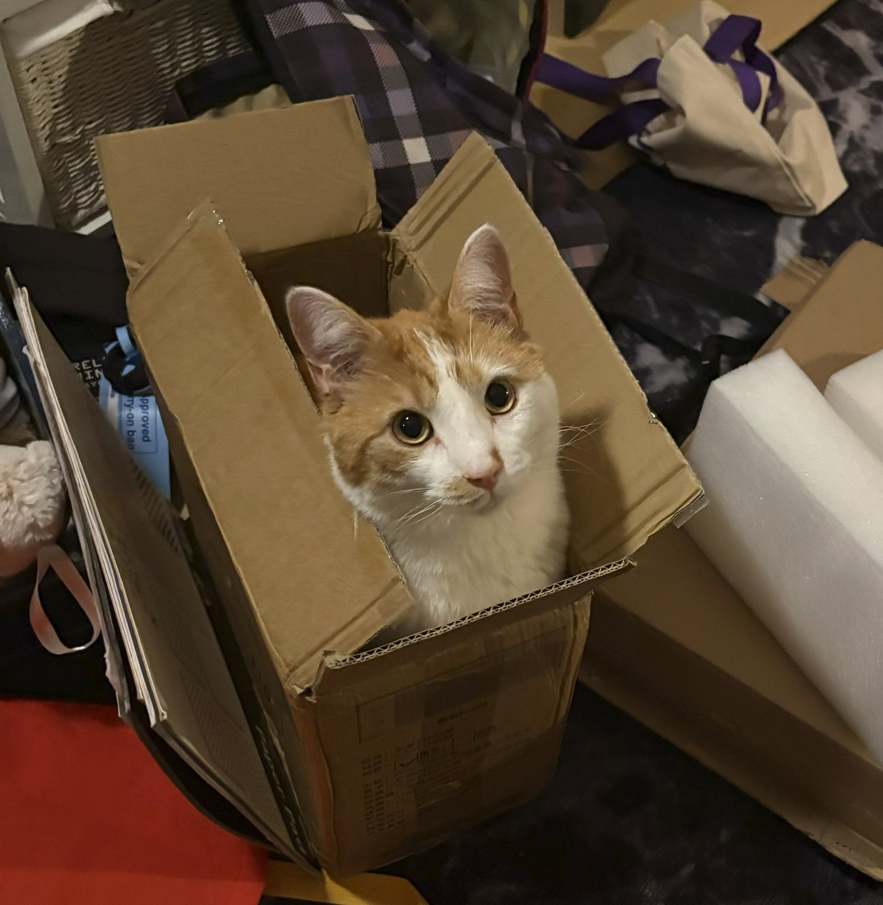

Velkmen til test sideen
Axolotl er en amfibieart i familien moldvarpsalamandere i ordenen haleamfibier. I vill tilstand lever den i restene av noen innsjøer som er i ferd med å forsvinne på grunn av veksten av Mexico City. De fleste axolotler finnes i dag som laboratorie- eller hobbydyr.
Arten er normalt pedomorf/neoten, det vil si at den ikke metamorfoserer til en landlevende form, men lever hele livet og forplanter seg som larve. Den kan bli inntil 30 centimeter lang, og har tre par store gjeller i nakken. I fangenskap er det avlet fram mange fargevarianter. Det er mulig å få den til å metamorfosere ved å tilføre jod eller injisere den med tyroksinhormon.

Ta kontakt!
Han er så søøøøt!
